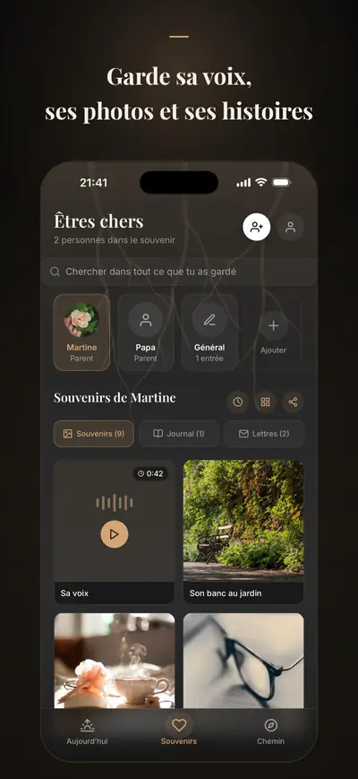
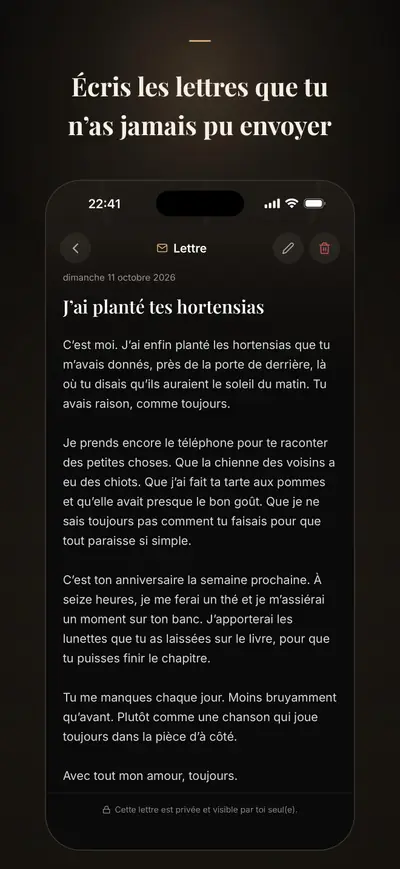

Solace Tree : Deuil et mémoire
Journal et lettres à un proche
Solace Tree est un journal pour traverser le deuil d’un être cher : garde ses photos et sa voix, écris-lui les lettres que tu n’as jamais pu envoyer, et prépare-toi aux dates qui font mal.
Pour iPhone. Gratuit pour commencer ; Premium est facultatif.


Avec Premium, tu prépares les fêtes et les premières fois aux dates que tu choisis, tu as un livre hommage et une copie chiffrée dans l’UE, qui revient sur un nouvel iPhone.
Pensé pour les mois qui suivent une perte, quand tout le monde croit que tu vas mieux et que ce n’est pas le cas. Souvenirs, lettres guidées, journal, son anniversaire et la date de son décès, point du jour, respiration et aide en cas de crise restent gratuits. Rien ne te presse, rien ne tient les comptes, et rien n’est partagé sans ton accord.
GARDER SES SOUVENIRS
- Photos, vidéos et enregistrements de sa voix, avec leurs histoires
- Une chronologie des souvenirs pour chaque personne
LUI ÉCRIRE
- Des lettres guidées et, avec Premium, des chemins plus profonds : ce que tu n’as pas pu dire, ce pour quoi tu veux dire merci, ce que tu gardes avec toi
- De douces pistes de réflexion pour les jours où les mots ne viennent pas
- Un journal privé pour tout le reste
SE PRÉPARER AUX DATES DIFFICILES
- Son anniversaire et la date de son décès ; avec Premium, la fête des Mères ou des Pères, la Toussaint et le premier Noël sans lui ou sans elle, aux dates que tu choisis
- De petits rituels sur lesquels s’appuyer : une respiration, un souvenir, un moment de calme ; avec Premium, une lettre, une visite ou une bougie
- De doux rappels quelques jours avant chaque date
FAIRE DE SES SOUVENIRS UN HOMMAGE (PREMIUM OU COFFRET SOUVENIR)
- Un livre hommage, une chronologie des souvenirs ou des cartes du souvenir, prêts à imprimer ou à garder
POUR LES MOMENTS LES PLUS LOURDS
- Un court point du jour, sans score et sans jugement
- Des exercices de respiration et d’ancrage quand le chagrin pèse dans le corps
- Un programme guidé de 30 jours pour les premières semaines après une perte
- Du réconfort puisé dans les traditions de foi, si tu le souhaites
- Une ligne d’écoute ou les urgences en un geste, quand une app ne suffit plus
TA VIE PRIVÉE D’ABORD
Tes souvenirs et tes écrits sont conservés sur ton iPhone, et tes points du jour, tes humeurs et la foi que tu choisis ne le quittent jamais, même avec Premium. Pas de publicité ni de pistage. Avec Premium, une copie chiffrée est gardée dans le cloud, dans l’UE ; si tu continues avec Apple dans Profil, elle revient sur un nouvel iPhone si tu perds le tien.
PREMIUM
Premium ajoute :
- Des plans pour plus de dates difficiles : fêtes, premières fois et dates à toi
- Les rituels lettre, visite et bougie
- Plus de modèles de lettres et de pistes de réflexion
- Êtres chers, souvenirs et entrées de journal sans limite
- Les hommages à exporter : livres hommage et chronologies des souvenirs
- La sauvegarde et la synchronisation dans le cloud, avec 250 Mo pour les photos, vidéos et enregistrements vocaux
Solace Tree est un compagnon et ne remplace pas un accompagnement professionnel. Lignes d’écoute et numéros d’urgence, par pays
Disponible en français, anglais, turc, allemand, espagnol et arabe.